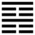

Thuần Cấn (艮 gèn)
Không thể động hoài được, sẽ tới lúc phải ngưng, cho nên sau quẻ Chấn tới quẻ Cấn. Cấn có nghĩa là núi, núi đứng yên một chỗ, cho nên cũng có nghĩa là ngừng lại.
Thoán từ:
艮其背, 不獲其身, 行其庭, 不見其人, 无咎．
Cấn kì bối, bất hoạch kì thân, hành kì đình, bất kiến kì nhân, vô cữu.
Dịch: Ngừng ở cái lưng (tĩnh như cái lưng) không thấy được thân mình, đi ở trước sân, không thấy có người, không có lỗi.
Giảng: Quẻ này vốn là quẻ Khôn, lấy nét thứ ba, dương của quẻ Càn thay vào nét thứ ba, âm của Khôn mà thành một nét dương ở trên, hai nét âm ở dưới; nét dương ngưng lại ở trên, hai nét âm cũng bị chặn ở dưới, cho nên đặt tên là quẻ Cấn (ngừng)
Trong thân thể người ta, đầu, cổ tay chân thường động đậy, chỉ có lưng là thường tĩnh; đó là nghĩa ba chữ: “Cấn kỳ bối”
Hễ tĩnh thì không bị tình dục chi phối, không làm điều ác; tĩnh thì không nghĩ tới mình (bất hoạch kỳ thân), mà cũng quên cả người khác (như đi ở trước sân mà không thấy có người), tức là không phân biệt mình với người, như vậy thì không có lỗi.
Thoán truyện giảng thêm: Lúc đáng ngừng thì ngừng, đáng đi thì đi (đi tức là biết tiến tới chỗ phải ngừng lại), động tĩnh đều hợp thời. Lại phải biết ngừng ở chỗ đáng ngừng, ví dụ cư xử với người cố đạt cho được đức nhân, đức tín, như vậy là biết ngừng ở chỗ đáng ngừng. Không phân biệt mình với người, coi nhân ngã chỉ là nhất thể (cũng như nội quái là Cấn, ngoại quái cũng là Cấn, cùng một thể với nhau, theo cách giải của Thoán truyện), đó là nghĩa sâu sắc của quẻ Cấn.
Đại Tượng truyện khuyên người quân tử chỉ nên ngừng ở chỗ làm trọn bổn phận của mình và đừng trật ra ngoài bổn phận của mình (bất xuất kỳ vị)
Ý nghĩa các hào :
1.
初六: 艮其趾, 无咎, 利永貞．
Sơ lục: Cấn kỳ chỉ, vô cữu, lợi vĩnh trinh.
Dịch: Hào 1, âm: Biết ngừng ở ngón chân thì không có lỗi, giữ bền được chính đạo thì có lợi.
Giảng: hào âm này ở dưới cùng quẻ Cấn ví như ngón chân; lúc mới bắt đầu động mà biết cẩn thận, ngưng lại thì không có lỗi. Sở dĩ khuyên như vậy vì hào 1 bất chính (âm ở vị dương. Mà phải kiên nhẫn giữ chính đạo thì mới có lợi.
2.
六二: 艮其腓, 不拯其隨, 其心不快.
Lục nhị: Cấn kỳ phì, bất chứng kỳ tùy, kỳ tâm bất khoái.
Dịch: Hào 2, âm: Ngăn ở bắp chân, không cứu được bắp vế mà mình phải theo nó, lòng không vui.
Giảng: hào này ở trên hào 1, như bắp chân; nó đắc trung đắc chính, biết lúc nào nên ngưng, nhưng nó tùy thuộc hào 3 ở trên nó, như bắp vế ở trên bắp chân (vế cử động thì bắp chân cử động theo), mà 3 thì lầm lỗi không sửa được, phải theo một kẻ lầm lỗi thì lòng không vui.
3.
九三: 艮其限, 列其夤, 厲薰心．
Cửu tam: Cấn kỳ hạn, liệt kỳ di (cũng đọc là dần), lệ huân tâm.
Dịch: Hào 3, dương: Ngăn ở lưng quần (ngang thận), như bị đứt ở giữa xương sống, nguy khốn, lo như cháy cả ruột.
Giảng: Hào này ở trên cùng nội quái, như ở chỗ lưng quần, nơi phân cách trên và dưới. Nó là dương cương, bất trung, tiến lên thì người trên không nghe, lui xuống cũng không được, như bị đứt ở giữa xương sống, rất nguy khốn.
4.
六四: 艮其身, 无咎．
Lục tứ: Cấn kỳ thân, vô cữu.
Dịch: Hào 3, âm: Ngăn phần thân mình, không có lỗi.
Giảng: Hào này lên đến giữa thân mình, nó đắc chính (âm ở vị âm) biết lúc nên ngừng thì ngừng, tuy không làm được việc gì, nhưng không có lỗi.
5.
六五: 艮其輔, 言有序, 悔亡．
Lục ngũ: Cấn kỳ phụ, ngôn hữu tự, hối vong.
Dịch: Hào 5, âm: Ngăn cái mép lại (có sách dịch là xương hàm), ăn nói có thứ tự, hối hận mất đi.
Giảng: Hào này lên tới mép, đắc trung, biết thận trọng lời nói, lúc nào không đáng nói thì không nói, nên không có gì hối hận.
6.
上九: 敦艮, 吉．
Thượng cửu: Đôn cấn, cát.
Dịch: Hào trên cùng, dương: Đôn hậu về đạo biết ngưng phải lúc, tốt.
Giảng: Hào này ở trên cùng, làm chủ quẻ dương cương, có tính đôn hậu, biết lúc nào nên ngừng thì ngừng tốt.